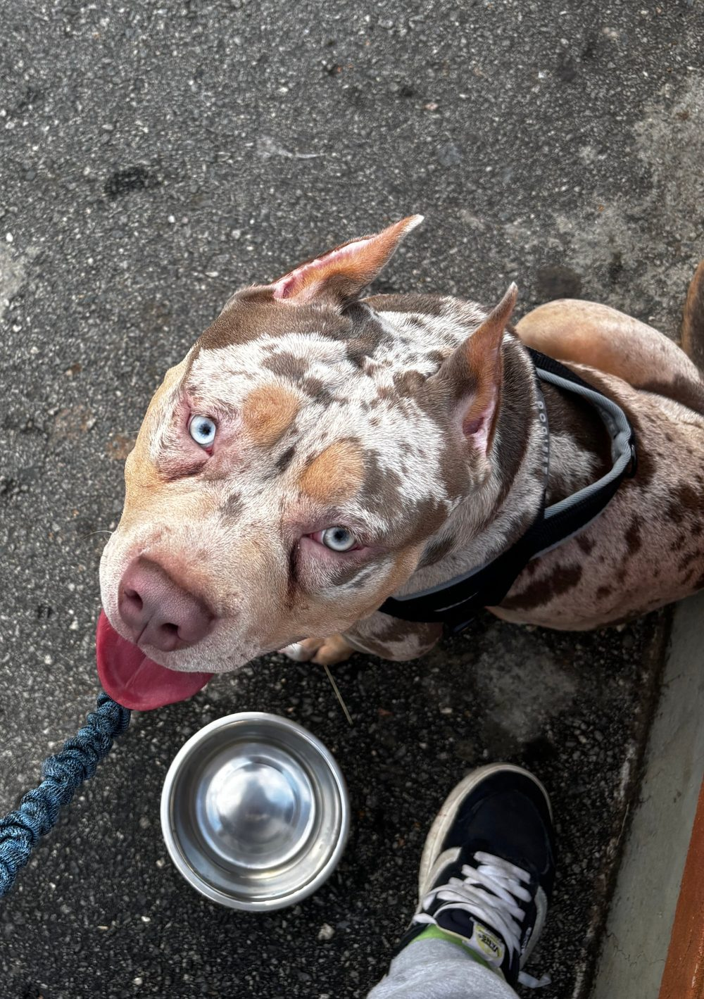
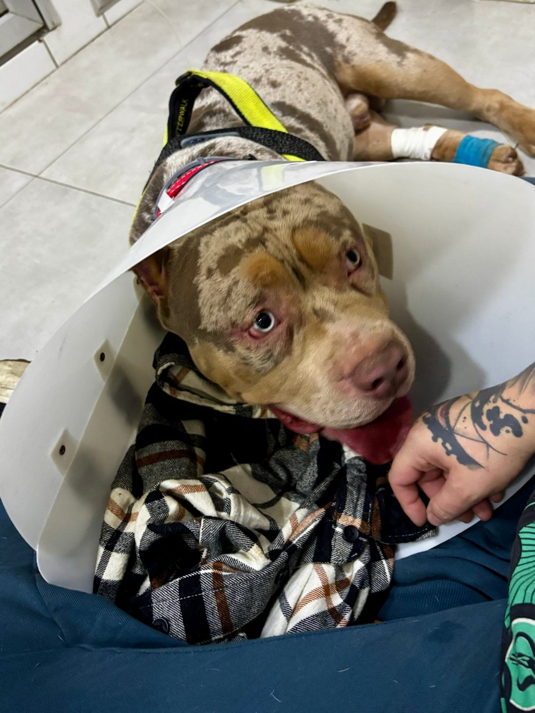
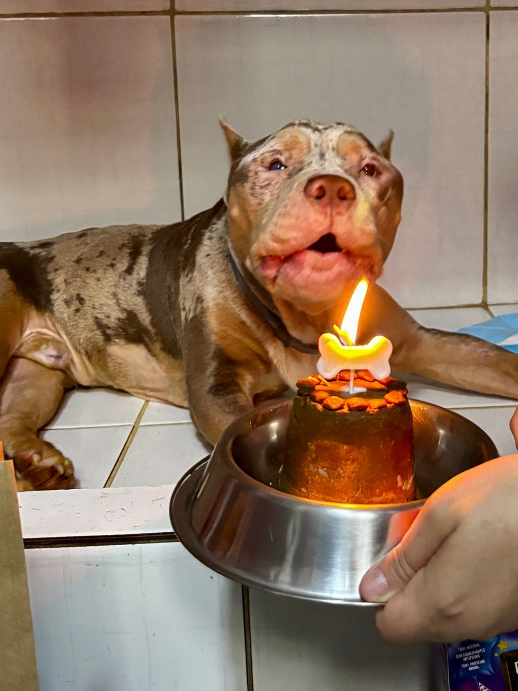
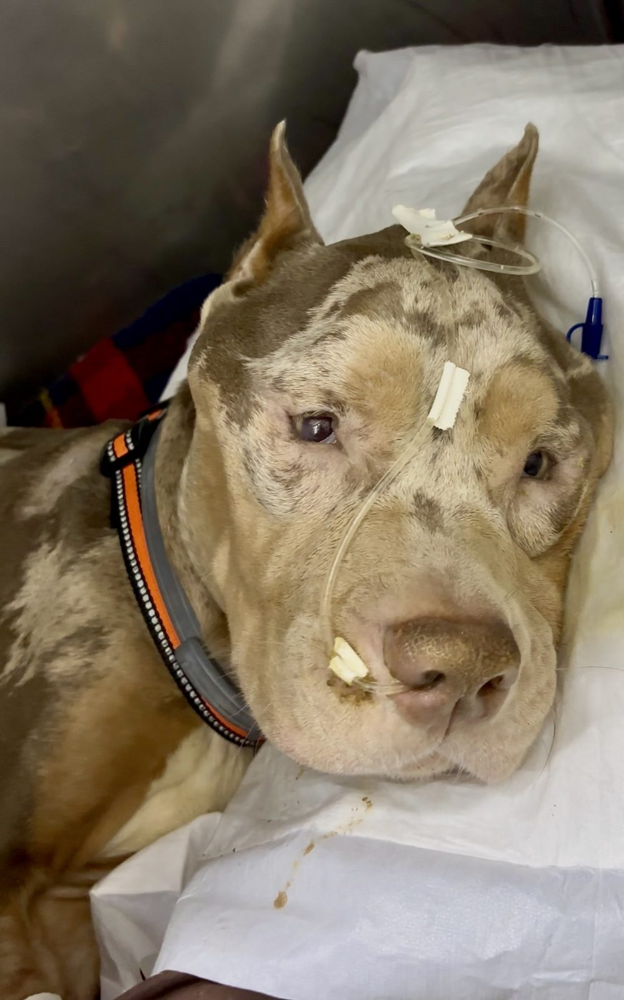

Quem cuida de um pet doente vive de horário, receita e exame espalhado no WhatsApp. O Munin Pet lembra cada cuidado, mostra quem fez e transforma exames em gráfico, pra família inteira cuidar junto.
Sem cadastro e sem nome. É pra eu entender a sua rotina antes de lançar.
Bento · Hojequi, 27/11
Temperatura38,6 °Cna faixa
Água hoje820 mLfaltam 180 mL
14:00Prednisona 5 mgFeito
16:00Água 120 mLPendente
20:00Medir temperaturaem 6 h
Ana deu a Prednisona 14:02 · a família inteira viu
A rotina do Odin desde setembro, registrada no app
738registros de cuidado
170doses de remédio dadas
105medições de temperatura
49exames organizados
Você não está só
Cuidar de quem a gente ama não deveria pesar tanto.
Entre um remédio e outro, a cabeça não desliga.
A dor que mais pesou pra mim
“Contar tudo de novo pra cada veterinário.”
Cada internação, cada plantonista, cada especialista que entrava no caso precisava ouvir a história do zero. Com tudo no app, a equipe inteira passou a ver a mesma evolução: exames, remédios, temperatura e o que mudou. O acompanhamento entre os profissionais ficou outro.
“Alguém já deu o das 14h?”
Três pessoas cuidando e ninguém sabe se a dose já foi, ou se foi duas vezes.
“Cadê o último hemograma?”
Laudo em PDF, foto e papel, cada um num canal. O veterinário pede e ninguém acha.
“Acabou a seringa de novo.”
Remédio, ração e material só são lembrados quando faltam.
“Ele bebeu água hoje?”
Ninguém anotou, então ninguém sabe dizer ao veterinário como ele está.
Como funciona
Do papel pro celular de todo mundo, em 3 passos.
1
Cadastre a rotina
Remédios, doses e horários direto da receita. Também dá pra mandar a foto da receita e o app preenche.
2
O celular avisa, a família marca
Na hora de cada cuidado, todo mundo recebe o aviso. Quem fizer marca, e os outros veem na hora.
3
Exames viram gráfico
Mande o PDF do laboratório. O app separa os valores e mostra a evolução, com a faixa normal marcada.
Telas de verdade do app, com dados de exemplo do Bento, um pet fictício. Use as setas pra ver as outras.
Bento · Hojeatualizado às 14:05
Temperaturana faixa38,6 °Càs 13:40 · Ana
Água hoje820 mLmeta 1.000 mL
Calorias610 kcalmeta 700 kcal
Creatininaacima1,6 mg/dLcaiu de 2,1
Próximos cuidados
16:00Água 120 mL · pendente
17:00Mudar de lado · em 3 h
18:00Amoxicilina 250 mg · em 4 h
20:00Prednisona 5 mg · em 6 h
Ontem12 de 12 cuidados feitos · sem febre · 1.050 mL de água
HojeRegistrarEvoluçãoHistóricoMais
A tela de hoje: temperatura, água, comida e os últimos exames.
Remédioshoje, 27/11
06:00 · ColírioCarla pingou às 06:10Feito
08:00 · Omeprazol 10 mgBeto deu às 08:04Feito
12:00 · Suplemento renalAna deu às 12:15Feito
14:00 · Prednisona 5 mgAna deu às 14:02Feito
18:00 · Amoxicilina 250 mgcom comidaem 4 h
20:00 · Prednisona 5 mgsegunda doseem 6 h
Adesão da semana96% das doses no horário · 1 atraso de 20 min
HojeRegistrarEvoluçãoHistóricoMais
Cada dose com o horário, quem deu e a adesão da semana.
Temperatura14 medições
Faixa verde: 37,5 a 39,4 °C · laranja: febre
38,7média39,8máxima38,3mínima
13:4038,6 °C · Ana
08:1038,4 °C · Beto
22:1039,6 °C · ontem · Ana
Última febreontem às 22:10 · baixou pra 38,9 °C em 1 h
HojeRegistrarEvoluçãoHistóricoMais
Cada medição vira gráfico, com a faixa normal marcada.
Avaliação do quadrogerada às 9:00
Pontos positivos
Rim melhorando: creatinina caiu de 2,1 pra 1,6 em duas semanas.
Comendo bem: 610 kcal hoje, perto da meta.
Remédios em dia: 96% das doses no horário.
Pontos de preocupação
Febre à noite: passou de 39,5 °C em 2 dos últimos 7 dias.
Água abaixo da meta em 3 dias da semana.
Pra levar na consulta
A febre noturna muda a dose da Prednisona?
Quando repetir a creatinina?
Leitura de apoio, não substitui a veterinária.
HojeRegistrarEvoluçãoHistóricoMais
A IA lê tudo e resume o quadro em pontos positivos e de preocupação.
Linha do tempohoje, 27/11
TudoRemédioExameComida e águaTemperatura
Hoje
14:02Prednisona 5 mg · Ana
13:4038,6 °C · Ana
12:30180 g de ração úmida · Beto
10:15Exame de sangue lido do PDF · Carla
08:00Água 150 mL · Beto
Ontem
22:1039,6 °C · febre · Ana
20:00Prednisona 5 mg · Carla
18:05Amoxicilina 250 mg · Beto
16:30Mudou de lado · Ana
HojeRegistrarEvoluçãoHistóricoMais
A linha do tempo mostra o que aconteceu, a que horas e quem fez.
Estoque6 itens
Gaze2 pacotes25 dias
Prednisona 5 mg36 comprimidos18 dias
Ração úmida12 sachês12 dias
Seringa 10 mL6 unidades3 dias
Soro fisiológico2 frascos9 dias
Tapete higiênico20 unidades7 dias
Lista de comprasSeringa 10 mL · 2 caixasCopiar lista
HojeRegistrarEvoluçãoHistóricoMais
O estoque avisa antes de acabar remédio, comida ou material.
Recursos
Tudo que a rotina de um pet doente pede.
Lembrete de cada cuidado
Remédio, água, comida, temperatura e mudar de posição, no horário certo.
Cuidado em equipe
Família, cuidador e quem mais ajudar. Cada um vê o que foi feito e por quem.
Exames lidos do PDF
A IA lê o laudo, separa os marcadores e desenha a evolução de cada um.
Alerta que não deixa passar
Se ninguém marcar a dose, o aviso insiste até alguém resolver.
Estoque e lista de compras
O app conta o que foi usado e avisa antes de acabar.
Equipe veterinária na mesma página
Um link de acompanhamento com exames, remédios e a evolução, sempre atualizado. Quem entra no caso já chega sabendo tudo.

Por que isso existe
Nasceu do Odin.
O Odin é um American Bully de 1 ano e pegou cinomose em setembro, mesmo vacinado. Entre três internações e a volta pra casa, a rotina virou remédio de hora em hora e a família se revezando. Eu sou engenheira de software e juntei tudo num app. Hoje a gente cuida dele com ele, e todos os veterinários que acompanham o Odin veem a mesma evolução.
Se ajudou a gente, pode ajudar outras famílias. Antes de transformar isso num produto, quero ouvir quem vive a mesma rotina.
Por que Munin?
Na mitologia nórdica, o deus Odin tem um corvo chamado Munin, a memória. Todo dia ele voa pelo mundo e, à noite, volta e conta tudo o que viu. É isso que o app faz: lembra cada remédio, cada exame e quem cuidou, pra ninguém precisar guardar tudo de cabeça.
Ler a história completa do Odin
1
Quem é o Odin
O Odin é um American Bully de um ano. Vacinado em dia, cheio de energia, do tipo que derruba a gente na porta.
Antes da cinomose
Passeio na praia, com o Pão de Açúcar ao fundo.De olho em tudo, sempre por perto.Esperando a água depois do passeio.
2
A cinomose
Em setembro, o Odin pegou cinomose, mesmo vacinado. Começou com uma tosse e, duas semanas depois, vieram as convulsões. A doença foi pro sistema nervoso e ele parou de andar.
Setembro e outubro
Em casa depois da primeira alta, com o dinossauro de pelúcia.Carinho no colo, entre uma internação e outra.Na véspera da segunda internação.
3
As internações
Entre setembro e novembro ele ficou internado três vezes. Fez aniversário de 1 ano internado e precisou de transfusão de sangue. Cada veterinário, cada exame, cada laudo chegava por um canal diferente.
Internação

Primeira internação, em setembro, com a manta de casa.

Aniversário de 1 ano, comemorado na internação.

Novembro, na terceira internação, com sonda pra se alimentar.
4
A casa virou uma UTI
Ele voltou pra casa no dia 16 de novembro. Remédio de hora em hora, temperatura, água, comida, mudar ele de posição, sonda pro xixi. E a família perguntando no grupo: “alguém já deu o das 14h?”
08:15 Colírio
12:45 Remédios antes do almoço
14:00 Água e mudar de lado
20:00 Medir a temperatura
5
Do papel pro app
Eram receitas e mais receitas, e resultado de exame em papel, PDF e foto no WhatsApp. Eu juntei tudo num app: ele avisa a hora de cada coisa, mostra quem fez o quê, lê os laudos e transforma em gráfico. O Odin segue lutando, um dia de cada vez, e a gente segue do lado dele.
Me ajuda a construir isso do jeito certo?
São perguntas rápidas sobre a sua rotina, uns 3 minutos. Não precisa deixar nome. No fim, se quiser, você entra na lista de espera.
Uns 3 minutosSem nome e sem cadastroLista de espera, se você quiser
Prévia: as respostas ainda não são enviadas pra lugar nenhum.
Primeiro, umas perguntas sobre a rotina de cuidado. Depois, 2 ou 3 sobre o app.
Obrigada de verdade.
Cada resposta me ajuda a entender se isso pode ajudar outras famílias. Se puder, manda a página pra alguém que cuida de um pet doente.